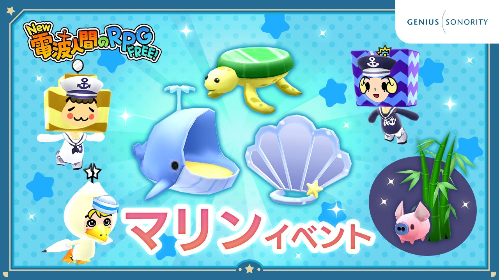
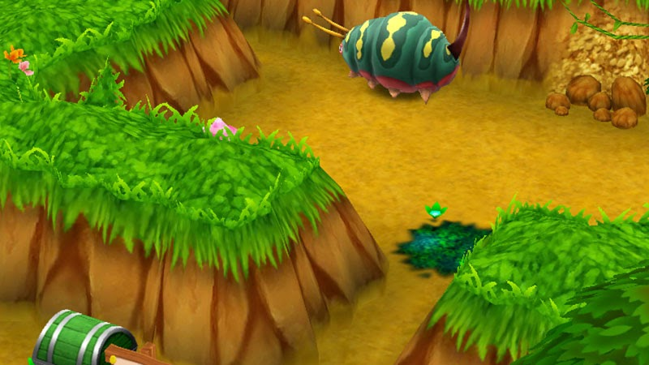
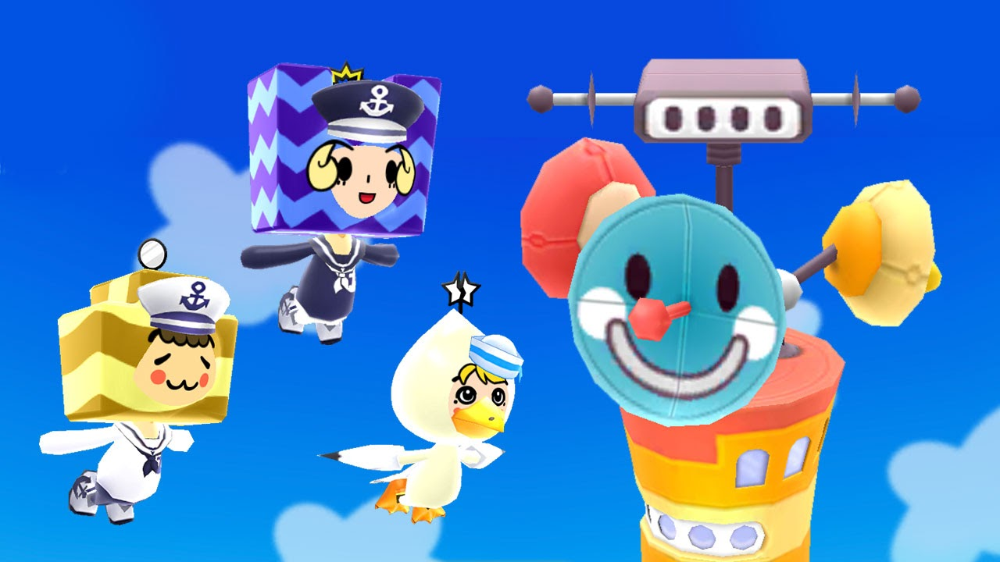
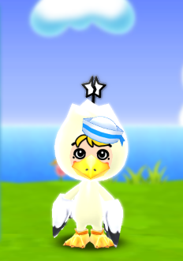
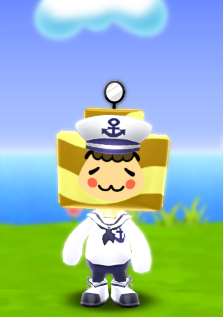
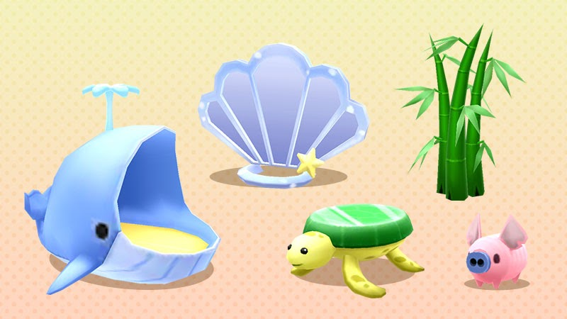
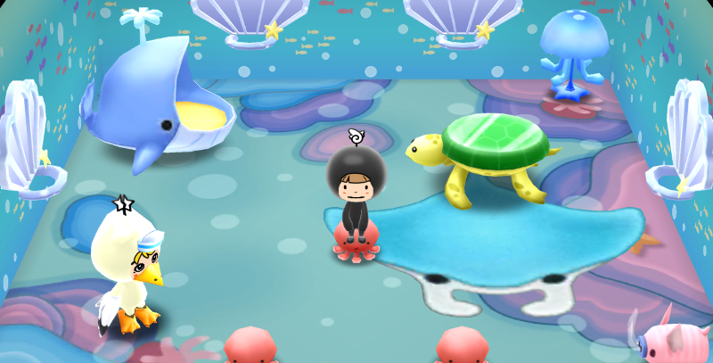

マリンイベント開催
『New 電波人間のRPG FREE！』
マリンイベント開催！
7月1日よりマリンイベントを開催します。 イベントはメイン1のステージをクリアするとオープンします。
マリンイベント開催！
7月1日よりマリンイベントを開催します。 イベントはメイン1のステージをクリアするとオープンします。


イベントステージ
イベント限定のステージ 「悩み多き七夕の村」 がオープンします。 みんなの願いが書かれた「たんざく」をモンスターから取り戻そう！
たんざくはステージの宝箱やモンスターのドロップから入手できます。 多めに入手できた場合は、余った分を次の回に持ち越すことができます。 ステージには制限時間があるので気を付けてくださいね。
ステージに対応するあかしコレクションもありますよ。 コンプリート報酬の受け取りはステージが開催されている間だけなのでご注意ください。 イベントステージは1日3回まで挑戦できます。

イベントキャッチ
イベント限定の特別な電波人間をキャッチすることができます。 今回は 海 をテーマにした電波人間たちが島にやってきます。


マリン
カモメの装備をつけたマリン むてきかいじょのアンテナを持っています

ナミ
水兵の装備をつけたナミ 雷属性の全体攻撃アンテナを持っています

ナギ
水兵の装備をつけたナギ わざはねかえすのアンテナを持っています
イベントキャッチは開催期間中に1回ずつキャッチすることができます。 1度キャッチした電波人間は、期間内に再登場することはありません。
イベントショップ
イベント限定のデコレを販売します。 今回は 海 をテーマにしたデコレが登場します。
【イベント期間】 7月1日 15時00分 ～ 7月8日 14時59分
ぜひ、お楽しみください！

